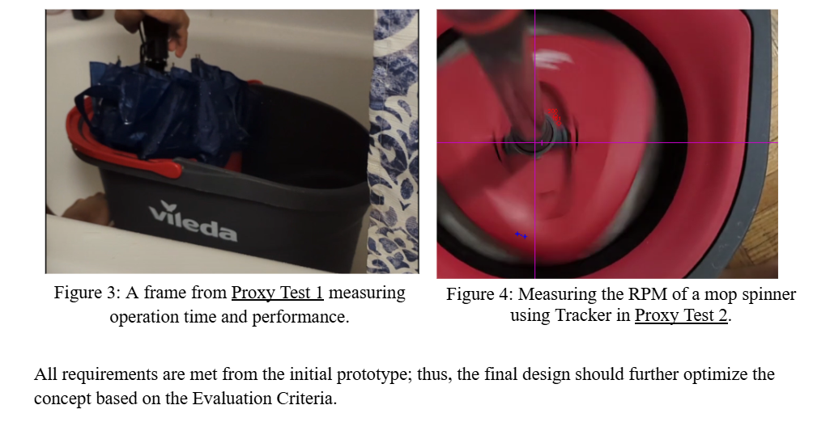
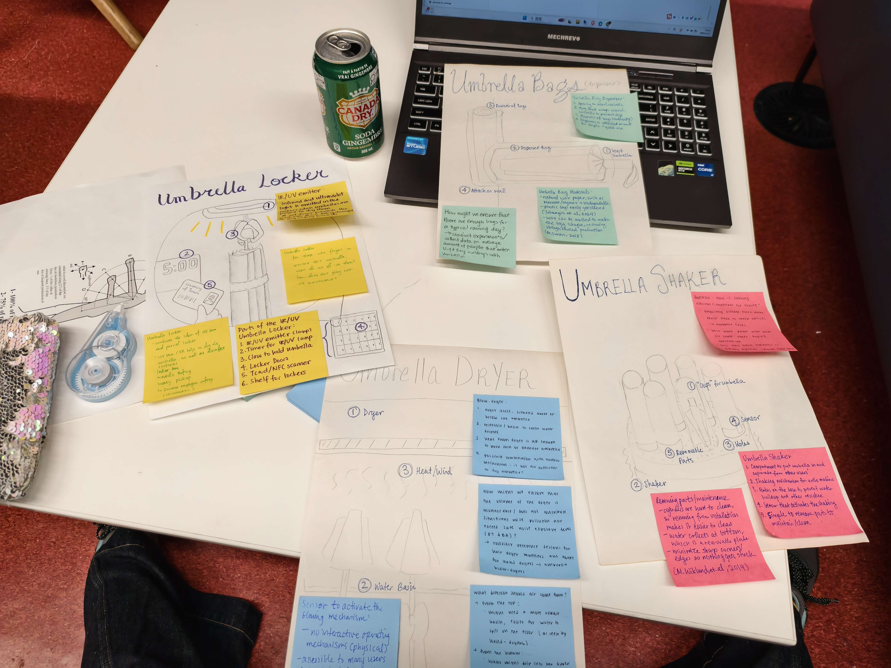
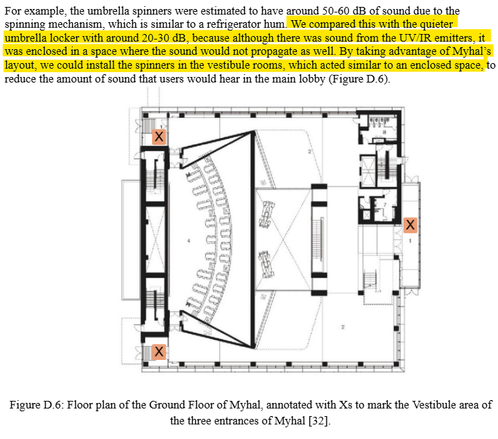
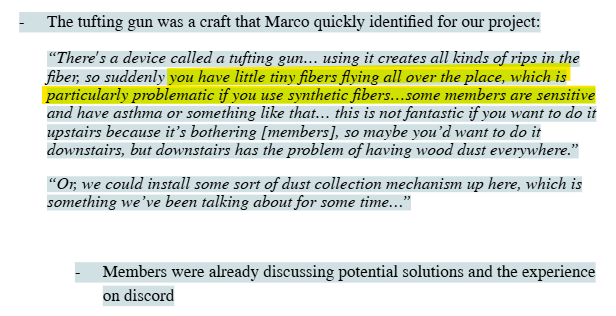
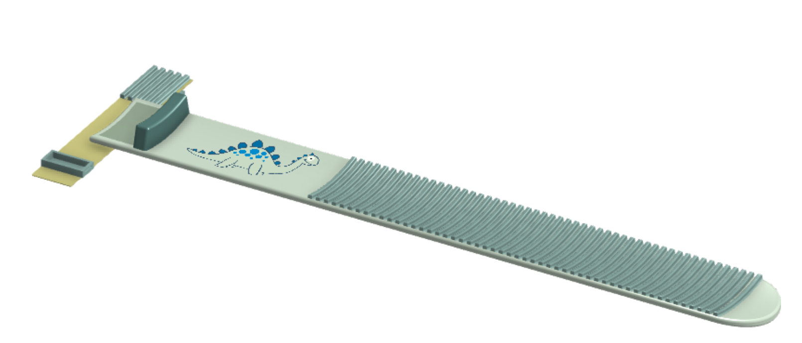
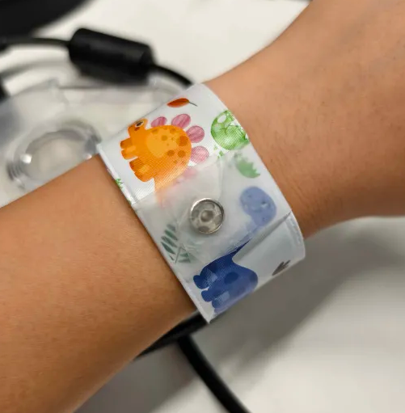

What is Praxis?
From the course's definition, Praxis refers to the co-constructive and critical interconnection of theory and practice. Thus, this page will be focused on the techniques and methods I used in the design process to overcome challenges and meet stakeholder needs.
There are a total of 3 Praxises - I, II, and III - and with each course, I dived deeper into the world of engineering design. These courses were where I gained the most experience working in a university group project, and I was assigned to a team of people that I've rarely interacted with before. Still, I was able to adapt to the team, where we collaborated on completing and presenting a design project.
Umbrella Spinner: A prototype to easily dry umbrellas indoors
In Praxis I, my team and I chose to conquer the challenge of wet umbrellas dripping water inside buildings, which is both a safety hazard and nuisance. In this project, I learned to write documents like request for proposals, frame stakeholder needs, and test our designs accordingly to engineering codes and standards.

Since it was my first design course, the focus was less on creating a solution but rather going through the engineering design process. The biggest challenge that my team and I encountered was narrowing down the best solution to recommend to our stakeholders. There are many methods to prevent umbrellas from dripping water indoors, but they each come with their own set of pros and cons.

I learned many strategies to cross this obstacle. First, we had to design tests and prototypees to see how well each design performed in stakeholder needs and engineering codes. Then, we compared each design's performance not just to eliminate subpar designs, but also to consider the possibility of combining designs to get the best out of each. Finally, we compiled all our findings into a Design Report to show to stakeholders and get their perspective on the work. Upon receiving their feedback, it would be possible to reiterate the entire design process again to refine our solution, but unfortunately that was over the scope of Praxis I.

Opportunity in Tufting: A chance to improve safety in the craft
In Praxis II, I worked with a new team to further deepen my engineering design skills. This time, we reached out to a makerspace community in the GTA, which gave us the chance to work with the community to mediate a real problem: the danger of airborne acrylic fibres when tufting.

Through this project, I learned that truly understanding a community's obstacles from their perspective is a difficult but crucial task. I was neither a tufting expert, or a long-term member of the community, but to design a good solution, it was necessary to know these fields.

Unfortunately, my team and I weren't able to pursue solutions for this problem due to lack of resources and time of Praxis II. However, it did open my eyes on how many teams, problems remain unresolved not because no one tries to fix them, but rather because of other restrictions.

The Slap! Bracelet: Prototyping Kid-Proof Wristbands
My Praxis II team was instead assigned to design an ID wristband for children in a daycare. The kid-proof wristband that we created was waterproof, easy to put on children, and difficult to take off without the approval of daycare staff.

Now that there was an opportunity to actually work with a community, I learned that a lot of times, features sound good on paper. They could even past all the tests and hit the stakeholder requirements, but may end up being unfunctional. For example, one of the requirements was that children must never be able to take of their wristbands, since it was the only way to identify that the child was from the daycare. However, simply making an indestructible wristband was not the way, because what would happen if the wristband needed to come off?

Being able to lock the wristband wasn't the hard part, as this is already a feature of many ID wristbands. Through communicating with the daycare, they listed out many concerns we never thought of, such as the time cost of bringing out scissors to cut the single-use wristbands and concern on wristbands getting caught in activity equipment. It was only through this communication that we could devise a solution that truly fought against their problem.

Future Steps
Evidently, I haven't yet taken Praxis III yet! That's a course for the next semester, and we get to pick our own teams this time. I'm extremely excited to learn and work with my old team again, along with some new friends we made along the way.
But even after I finish the final course, I'll never truly be "done" Praxis. The engineering design process is a mentality that I have built throughout the courses, and I will continue to reiterate this process as I work through my engineering career in the future.